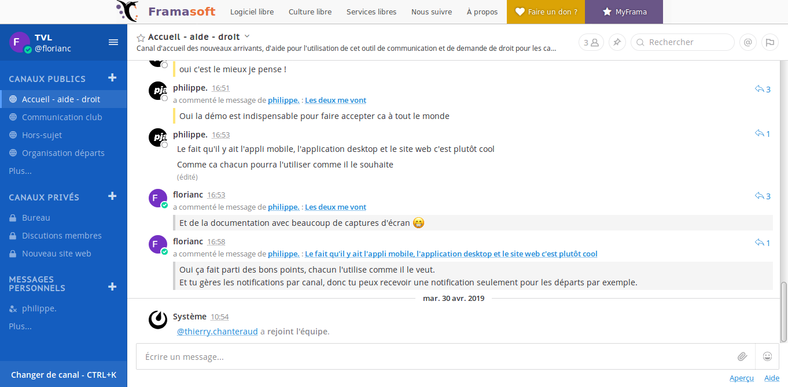
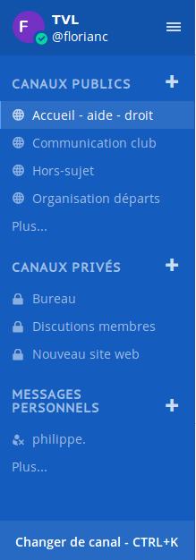
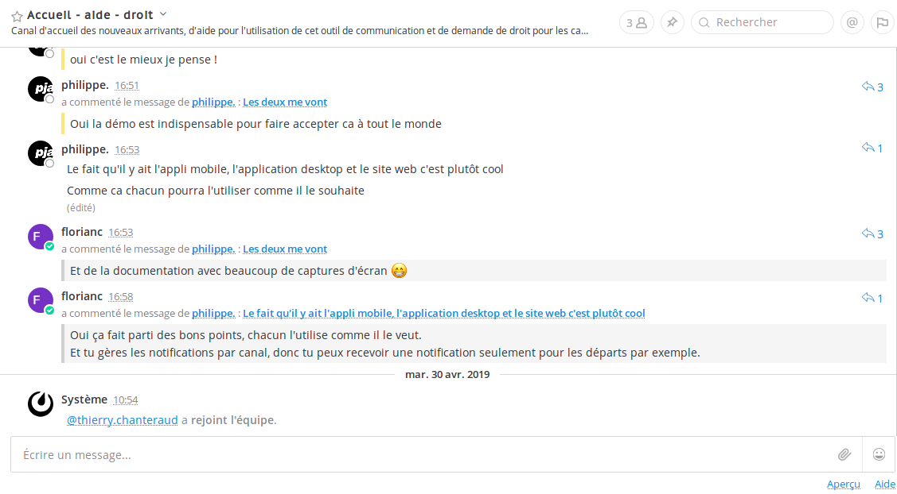
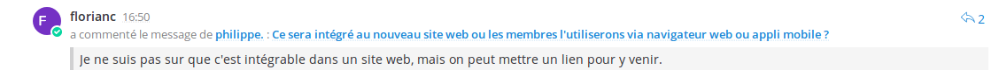
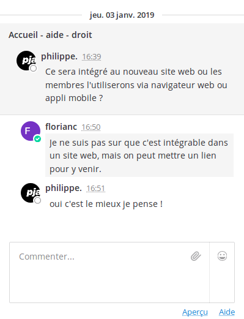
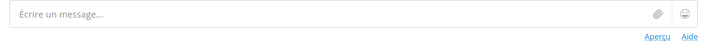

Suivre le lien suivant pour s'inscrire à l'instance Framateam.
Choisir 'Email and password' puis entrez votre email, un nom d'utilisateur et un mot de passe.
Dans votre navigateur internet (Firefox, Chrome, Edge, ...), rendez vous à l'url suivante https://framateam.org/tvl. Si des identifiants vous sont demandés, renseignez ceux configurés lors de l'étape précédente (Inscription).
La liste des applications pouvant être utilisées sont disponibles à l'adresse suivante : https://mattermost.com/download/#mattermostApps
Lors de la première ouverture, l'application va vous demander l'url du serveur sur lequel se connecter, renseigner l'url suivante : https://framateam.org.
Ensuite les identifiants à utiliser sont ceux définis dans la partie inscription.
Une fois connecté, la page affichée devrait ressembler à l'image suivante (ici connexion au site web) :
On peut distinguer plusieurs parties, tout d'abord à gauche :
Les discussions sont rangées par catégories, les premières sont publiques c'est à dire que quiquonque ayant accès à l'espace de discution peut y participer.
Lors de votre première connexion vous n'en voyez que deux (Aides - Accueil - Droit et Hors-sujet), pour avoir accès aux autres canaux publique il suffit de cliquer sur 'Plus...' et sélectionner les canaux à ajouter.
Les canaux suivants sont privés, ils ne sont accessibles que sur invitation (licenciés et adhérents du club). La dernière catégorie sert à ouvrir des canaux de discussion entre un ou plusieurs membres
Les conversations s'affichent dans le milieu de la fenêtre :
Les messages s'affichent dans l'ordre chronologiques, les plus récents en bas.
Il est possible de répondre à un message en particulier, il s'affiche alors avec l'information suivante :
En cliquant sur le texte bleu de la deuxième ligne, on obtient alors une fenêtre affichant l'ensemble de la discussion et la possibilité de commenter.
Enfin le champ de saisie de texte tout en bas de la page permet d'écrire un nouveau message qui débutera une nouvelle discution
